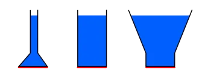

Pressure is the force acting per unit area on a surface.
\[ P = \frac{F}{A} \]
Where \( P \) is pressure, \( F \) is force, and \( A \) is area. Pressure is measured in pascals (Pa). \( 1 \, \text{Pa} = 1 \, \text{N/m}^2 \)
In a fluid, pressure increases with depth. The pressure at depth \( h \) is given by:
\[ P = h\rho g \]
Where \( h \) is the depth, \( \rho \) is the fluid density, and \( g \) is the acceleration due to gravity.
Pascal’s law states that a change in pressure applied to an enclosed fluid is transmitted undiminished to all parts of the fluid and to the walls of its container.
This principle is the basis for hydraulic systems, which use an incompressible fluid to transmit force.
If a small force is applied to a small piston, it can be used to create a larger force on a larger piston.
\[ \frac{F_1}{A_1} = \frac{F_2}{A_2} \]
Where \( F_1 \) and \( A_1 \) are the force and area on the small piston, and \( F_2 \), \( A_2 \) on the larger piston.
In the system of communicating vessels, surface level of still liquid is the same in all vessels.
Written by Pavle Ignjatovic